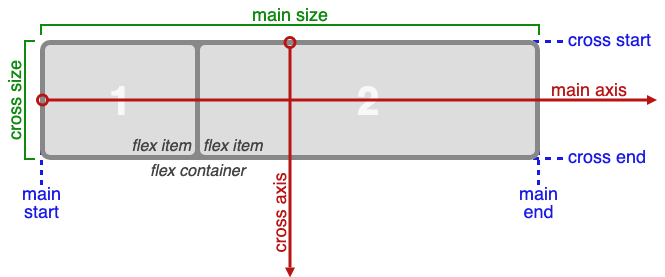

CSS Flexbox

- main axis: eje principal de los flex items
- cross axis: eje transversal de los flex items
- default: quiere decir que la propiedad se aplica por defecto y NO es necesario escribir
- (display: flex) declaración css inicial que se aplica al contenedor de los items (flex container)
y lo establece
como un contenedor de tipo flexbox
Propiedades Flexbox
- flex-direction: se aplica al flex container para definir la dirección de los flex items
- row: alineación horizontal de los flex items iniciando desde la izquierda con el primer flex
item (default)
- row-reverse: alineación horizontal de los flex items iniciando desde la derecha con el primer
flex item
- column: alineación vertical de los flex items iniciando desde arriba con el primer flex item
- column-reverse: alineación vertical de los flex items iniciando desde abajo con el primer flex
item
- flex-wrap: se aplica al flex container para envolver a todos los flex items y definir si aparecen
en
una sola línea o varías líneas, se distingue mejor cuando los flex item respecto al cross axis tiene un
tamaño definido.
- no-wrap: flex items no envueltos (default)
- wrap: flex items envueltos
- wrap-reverse: flex items envueltos al reves
- justify-content: se aplica al flex container para ordenar a sus flex items respecto al eje
principal
(main axis)
- flex-start: los flex items se ordenan desde el principio, iniciando por el primer flex item
(default)
- flex-end: los flex items se ordenaran desde el final, iniciando por el último flex item
- center: los flex items se ordenan al centro
- space-between: se utilizará el espacio sobrante del flex container para repartir espacios
iguales entre los flex items pero excepto a los extremos (el primer y el último flex item
estarán pegados a los extremos)
- space-around: se utilizará el espacio sobrante del flex container para repartir espacios
iguales entre los flex items pero en los extremos tendrán el 50% del espacio que hay entre los
otros flex items
- space-evenly: se utilizará el espacio sobrante del flex container para repartir espacios
iguales entre todos los flex items, incluso en los flex items de los extremos
- align-items: se aplica al flex container para ordenar a sus flex items respecto al eje
transversal
(cross axis)
- stretch: si los flex items no tienen un tamaño fijo, se estirarán ocupando todo el espacio que
tenga
disponible (default)
- flex-start: los flex items se ordenan desde el principio, iniciando por el primer flex item
- flex-end: los flex items se ordenan desde el final, iniciando por el último flex item
- center: los flex items se ordenan al centro
- baseline: los flex items se ordenan por las bases de los contenidos en cada flex item
- align-content: funciona solo si la propiedad flex-wrap tiene el valor "wrap" o "wrap-reverse" y
se aplica al flex container para ordenar a sus flex items respecto al eje transversal (cross axis)
- stretch: si los flex items no tienen un tamaño fijo, se estirarán ocupando todo el espacio que
tenga
disponible (default)
- flex-start: los flex items se ordenan desde el principio, iniciando por el primer flex item
- flex-end: los flex items se ordenan desde el final, iniciando por el último flex item
- center: los flex items se ordenan al centro
- baseline: los flex items se ordenan por las bases de los contenidos en cada flex item
- order: se aplica en cada flex item para definir su orden de posición en el flex container
- 0 (cero): posición natural (default)
- valores negativos y positivos
- flex-grow: se aplica en cada flex item y es la capacidad de crecer en el espacio sobrante del
flex container
- flex-shrink: se aplica en cada flex item y es la capacidad de reducirse cuando el flex container
se reduce o ya tiene espacio
- flex-basis: se aplica a un item flex específico, si la alineación es "row" flex-basis
representará a la propiedad "width", y si la alineación es "column" representará a la propiedad "height"
- la propiedad flex-basis dejará sin efecto a la propiedad width cuando ambas esten aplicadas a un
mismo elemento
- align-self: sobreescribe el valor de la propiedad "align-items" se aplica específicamente a un
flex item y se ordena con respecto al eje transversal(cross axis)
Colores para los ejemplos
- flex container: color negro
- flex item: color amarillo
flex-direction
se aplica al flex container para definir la dirección de los flex items
- row: alineación horizontal de los flex items iniciando desde la izquierda con el primer flex
item (default)
- row-reverse: alineación horizontal de los flex items iniciando desde la derecha con el primer
flex item
- column: alineación vertical de los flex items iniciando desde arriba con el primer flex item
- column-reverse: alineación vertical de los flex items iniciando desde abajo con el primer
flex
item
flex container css:
flex-wrap
se aplica al flex container para envolver a todos los flex items y definir si aparecen en una sola
línea o varías líneas
- no-wrap: flex items no envueltos (default)
- wrap:flex items envueltos
- wrap-reverseflex items envueltos al reves
flex container css: Cuando la propiedad "flex-direction" es "row"
1
2
3
4
5
6
7
8
9
10
11
12
13
14
15
16
17
18
19
20
21
22
23
24
25
26
27
28
29
30
31
32
33
34
35
36
37
38
39
40
41
42
43
44